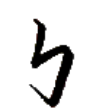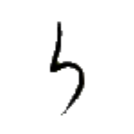
トゥン⤴
【神】
[名詞]
運、時の運
善神
カイㇳ·トゥン⤴
【善神】
[名詞]
幸運
悪神
ノン→トゥン⤴
【悪神】
[名詞]
悪運、運の尽き
天神
ズィュㇳ⤴トゥン⤴
【天神】
[場所詞]
マカティ（アイル共和国の首都）
神論
トゥン⤴ツイ→
【神論】
[名詞]
宗教
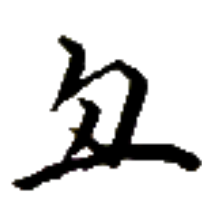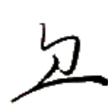
ホゥエゥㇷ゚⤴
【地】
[名詞]
地面、土地
地絵
ホゥエゥㇷ゚⤴レゥㇰ→
【地絵】
[名詞]
地図
地心
ホゥエゥㇷ゚⤴ヒアー→
【地心】
[名詞]
文化
地心集
ホゥエゥㇷ゚⤴ヒアー→ダㇳ⤴
【地心集】
[名詞]
（アイル共和国の）文化省
地豊豆
ホゥエゥㇷ゚⤴ホウ→クオㇳ→
【地豊豆】
[名詞]
落花生、ピーナッツ
全地
ベゥー→ホゥエゥㇷ゚⤴
【全地】
[名詞]
世界
[連体詞]
世界中の
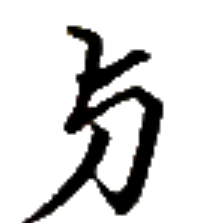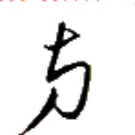
ユ·
【亦】
[接続詞]
または
亦無
ユ·ムン→
【亦無】
[文末助詞]
～か否か
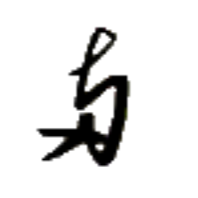
ユン⤴
【乎】
[文末助詞]
～か？
肯否疑問文を作る。
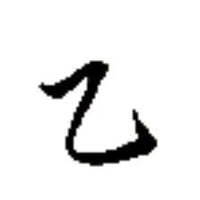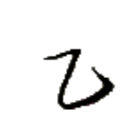
ヌン→
【十】
[連体詞]
10 個の
[名詞]
10
十百
ヌン→キㇳ→
【十百】
[連体詞]
1000 個の
[名詞]
1000
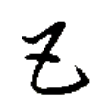
テゥㇳ·
【唯】
[副詞]
～するのみ、～するだけ
[連体詞]
～のみ、～だけ
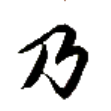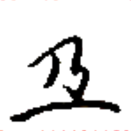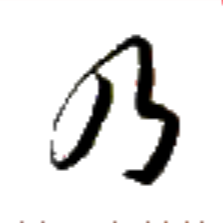
プイ→
【位】【順】
[助数詞]
～番目の
 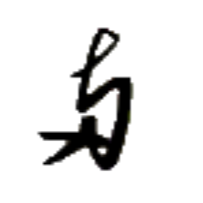
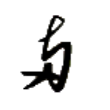
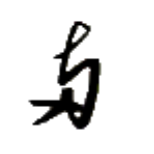
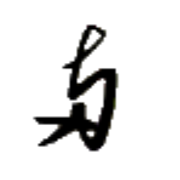